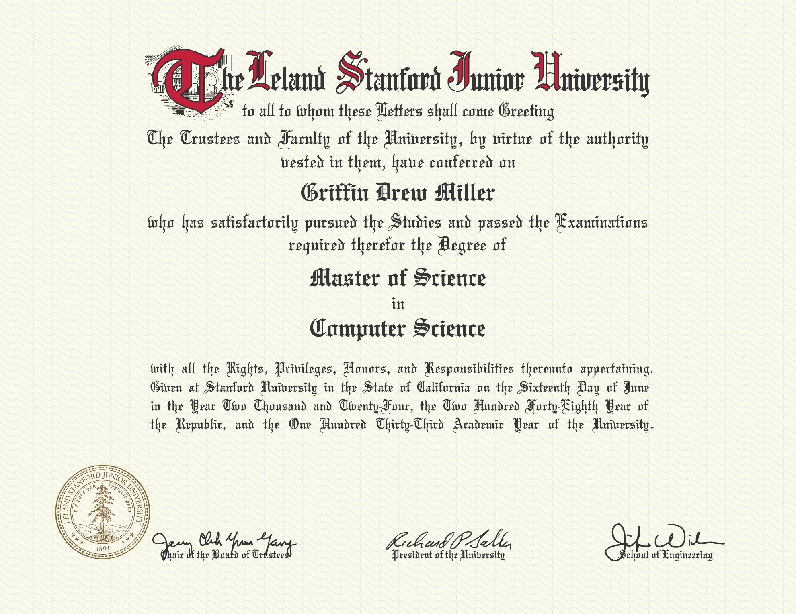
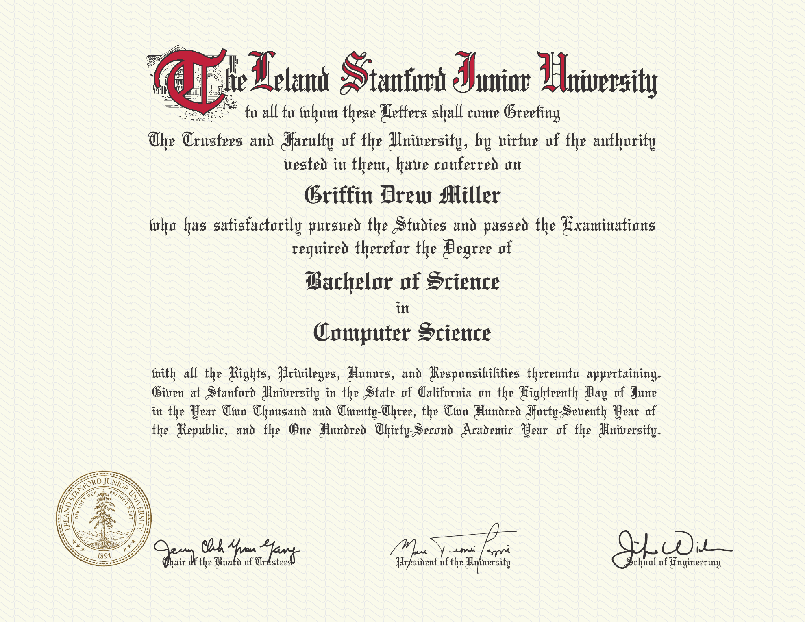
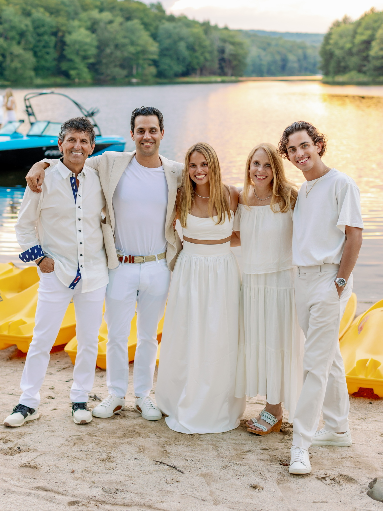

Sidekick
A replication study of “Sidekick: In-Network Assistance for Secure End-to-End Transport Protocols” (NSDI ’24).
I’m an AI engineer based in New York. I work on AI/ML and product at Cosmos. I also work with companies on applied AI strategy, product development, ML architecture, and custom tooling.
I studied computer science and classical music at Stanford. I’m a classical orchestral timpanist, percussionist, and conductor. My favorite instrument to play is marimba.
I'm constantly figuring out how to incorporate music into my life. I recently picked up the flute and guitar and lugged a butter yellow spinet piano into my apartment. I’ve also been messing around with music production across genres. I also have an electronic marimba here in the city that I’d love to use more.
I’m also an adjunct professor at Fordham University and Hunter College, where I teach computer science.
Cosmos — AI/ML & recommendation systems
Design Miami — AI workflows & organizational systems
The New York Times — Applied LLMs & editorial tools


At Stanford, I earned a master’s degree in Computer Science with a focus in Computer & Network Security, a bachelor’s degree in Computer Science with a focus in Artificial Intelligence, and a bachelor’s degree in Classical Music.


A replication study of “Sidekick: In-Network Assistance for Secure End-to-End Transport Protocols” (NSDI ’24).
Functional Adafruit MAX98357 I2S Class-D Mono Amplifier and Knowles SPH0645LM4H-B Microphone.
Runs on top of a simple, clean OS for the widely used, ARM-based Raspberry Pi that I built from scratch over the course of a quarter.
Evaluating Pro-Security Advice on TikTok.
A qualitative study of the quality of modern technological security education on social media.
I’m a classical orchestral timpanist, percussionist, and conductor, also interested in production, sound design, and combining acoustic instruments with electronics. A few recordings from my time at Stanford:
Snare drum & electronics
Senior recital, spring 2023
Conducting — Clarinet, bassoon, horn, piano, violin, viola, cello
Senior recital, spring 2023
Cello, transcribed for marimba
Senior recital, spring 2023
Conducting — Woodwinds, trumpets, and horns
Stanford Philharmonia, winter 2022
My family owns a sleepaway camp, Camp Starlight, in Starlight, PA, about 2½ hours outside NYC. I use it to throw a fun event on Labor Day weekend with 100 of my friends.
It’s also a great spot for corporate retreats, concerts, weddings, and music festivals. I’m pretty good at organizing events, so if you have something in mind, let’s chat. Always down for a side quest.
